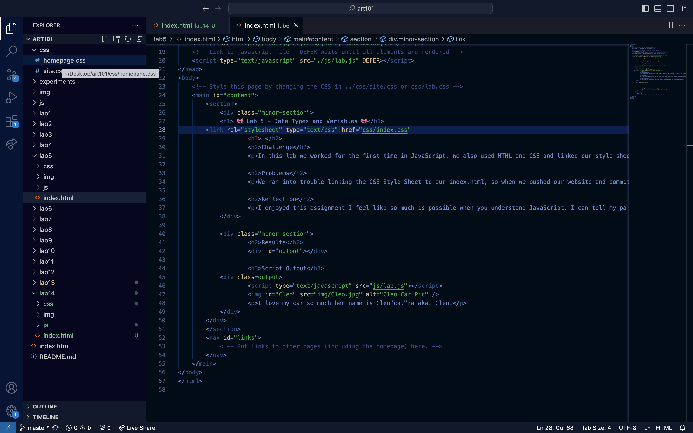
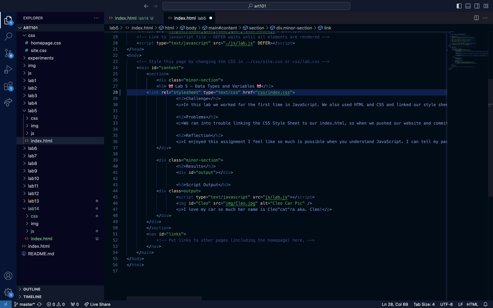

The only lab I found errors in was lab 5, and this was only because I forgot to close a tag. I closed the tag and my code was working fine. I have other issues in my JavaScript but it seemed like everyone in the class had the same notice, it was a warning, not an error and when I asked my TA about it, she said it's nothing to worry about and my JavaScript is fine. So it was a super simple lab for me since I just had to close a silly "link" tag.
🪲🐛 Lab 14 - Debugging Tools & Strategies 🐛🪲
Challenge:
In this lab our challange was to "debug" our old labs and fix any errors in our code that showed up in the console using the tactics and tools we learned about in class.
Problems:
I really didn't have any propblems in this lab at all, besides the weird warning(non error) symbol that pops up in the console in labs 5-7. But besides that I have been very thankful this lab went by without issues since I had more time this weeek to work on my finals for my other classes I'm not doing as well in!
Results:
Overall I am happy with this lab. Debugging was super easy for me since I didn't have much to debugg but I taught myself how to better move divs and images in css. I have been refering to W3Schools quite a bit recently and I feel like I've been learning so many cool tricks (sort of off topic sorry). If u want to see another cool thing I learned how to do go ahead and hover over the link to my homepage or Lab 13.
Debugging
Images (Lab 5):
→→→

